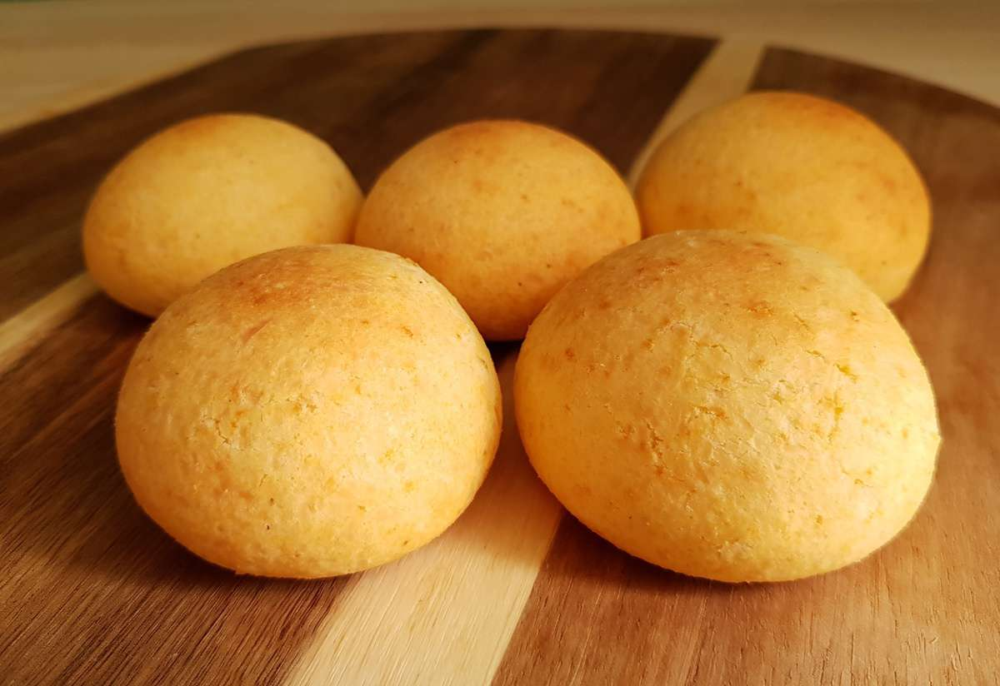

Historia de Ubaté
Bienvenidos a un fascinante recorrido por la historia de Ubaté, un tesoro en el corazón de Colombia que encierra secretos, tradiciones y momentos que han dado forma a su identidad única! Desde sus inicios hasta la actualidad, Ubaté ha sido testigo de cambios significativos y ha dejado una huella imborrable en la historia del país. Prepárate para explorar los rincones de esta ciudad encantadora mientras desentrañamos su pasado y su presente.
Los Inicios: Orígenes de Ubaté
La historia de Ubaté se remonta a tiempos ancestrales, cuando las comunidades indígenas poblaron estas tierras. Con la llegada de los conquistadores españoles en el siglo XVI, se estableció una dinámica de mestizaje cultural que dejaría una marca perdurable en la región.
La Herencia Indígena y el Mestizaje
Las tradiciones y la cultura indígena aún laten en el corazón de Ubaté. La arquitectura, la gastronomía y las festividades locales son reflejos de esta rica herencia. El mestizaje entre las poblaciones nativas y los colonizadores europeos contribuyó a la diversidad cultural que caracteriza a Ubaté.
Época Colonial y el Camino hacia la Independencia
Durante la época colonial, Ubaté se convirtió en un importante centro agrícola y ganadero. El comercio de productos locales se convirtió en un motor económico que influyó en el desarrollo de la región. A medida que se gestaba el movimiento independentista en Colombia, Ubaté también alzó su voz en busca de libertad.
Contribuciones a la Independencia
La lucha por la independencia fue una llama que ardió en los corazones de los ubateños. Figuras como Antonio Nariño, un destacado líder independentista, inspiraron a la población local a alzarse contra el dominio español. La valentía y la determinación de estos héroes locales se mantienen vivas en la memoria de Ubaté.
El Presente de Ubaté: Un Vistazo a la Actualidad
Hoy en día, Ubaté combina su rica historia con la vida moderna. La ciudad ha sabido preservar sus tradiciones y valores mientras se adapta a los cambios y desafíos contemporáneos. Los habitantes de Ubaté continúan honrando sus raíces y celebrando su identidad cultural.
Escudo de Ubaté
El escudo de Ubaté es un símbolo de la identidad y el orgullo del municipio. Este representa su historia, cultura y riqueza natural. Está compuesto por varios elementos que reflejan el patrimonio y los valores de la región.
Descripción del Escudo
El escudo de Ubaté se caracteriza por su diseño que integra elementos históricos y naturales importantes:
- La parte superior: Está adornada con un yelmo de caballero medieval, lo que representa la historia y la nobleza de sus habitantes, especialmente durante la época de la colonia y la independencia.
- Los cuarteles: El escudo está dividido en cuatro cuarteles:
- Cuartel superior izquierdo: Muestra un paisaje montañoso que simboliza la ubicación geográfica de Ubaté, rodeado de montañas y valles.
- Cuartel superior derecho: Presenta una espiga de trigo y una mazorca de maíz, representando la riqueza agrícola de la región.
- Cuartel inferior izquierdo: En este cuartel se encuentra una vaca, simbolizando la importancia de la ganadería en Ubaté, conocido como la "Capital Lechera de Colombia".
- Cuartel inferior derecho: Contiene un libro y una antorcha, representando la educación y el conocimiento como pilares del desarrollo de la comunidad ubateña.
- Cinta inferior: En la parte inferior del escudo, una cinta con la leyenda "Ubaté" recuerda el nombre del municipio y su importancia histórica en la región.
Este escudo es un reflejo de la historia, el trabajo y la naturaleza que definen a Ubaté como un municipio clave en el altiplano cundiboyacense.
Himno de Ubaté
Letra del Himno de Ubaté
Letra: Juan de Dios Peñuela
Música: Gonzalo Vera Santos
Coro
Ubaté, noble tierra bendita,
cuna de historia y tradición,
que en tus campos de paz infinita,
brilla siempre el trabajo y unión.
Estrofa 1
Desde el tiempo de antaños gloriosos,
tus montañas altivas están,
vigilando los cielos hermosos,
que a tu pueblo cobijan en paz.
Estrofa 2
Eres tierra de leche y ganados,
de labriegos de noble corazón,
con tu esfuerzo y tus manos honrados,
vas forjando un futuro mejor.
Estrofa 3
Tus paisajes y verdes caminos,
son reflejo de tu inmenso valor,
y tus hijos con fe peregrinos,
son el alma de un pueblo luchador.
Historia del Himno de Ubaté
El himno de Ubaté fue compuesto por Juan de Dios Peñuela en su letra y por Gonzalo Vera Santos en su música. Es un homenaje a la historia, la cultura y las riquezas naturales de la región. Cada verso está inspirado en los valores que han definido a Ubaté como una tierra de paz, trabajo y unión. Su letra refleja el orgullo de los ubatenses por su tierra fértil, su tradición ganadera, y su papel en la historia de Colombia.
Este himno se canta en ceremonias oficiales y eventos importantes del municipio, evocando el sentido de pertenencia y el compromiso de su gente con el progreso de Ubaté. Además, su mención a los paisajes y al trabajo de los labriegos subraya la conexión del pueblo con su tierra y la importancia del esfuerzo colectivo para un futuro mejor.
Gastronomía
¡Bienvenidos a Ubaté, un rincón gastronómico lleno de encanto en Colombia! En este artículo, te invitamos a explorar las delicias culinarias de este lugar que no solo te llenarán el estómago, sino que también te transportarán a la rica historia y tradición de la región.
¿Por Qué Sumergirse En Los Sabores De Ubaté?
Comer en Ubaté es una experiencia que va más allá de satisfacer el hambre. Cada platillo cuenta una historia, desde los ingredientes locales frescos hasta las recetas transmitidas de generación en generación. Los sabores auténticos y la pasión que los lugareños ponen en sus creaciones culinarias te brindan una conexión íntima con la cultura y el corazón de Colombia.
Historia Culinaria De Ubaté
La historia culinaria de Ubaté es un reflejo de la diversidad de la región. Sus platos típicos están influenciados por la herencia indígena, española y mestiza, creando una fusión única de sabores y tradiciones. Los ingredientes frescos y la creatividad culinaria son la base de cada receta, y cada bocado es una forma de preservar y compartir la rica historia de Ubaté.
Platos Que Conquistan Paladares
AJIACO UBATEÑO
El ajiaco ubateño es un caldo espeso y reconfortante que combina papas de diferentes variedades, pollo tierno, maíz y guascas, una hierba que le da su sabor característico. Este plato es una celebración de los ingredientes locales y una muestra del ingenio culinario de Ubaté.
SOBREBARRIGA AL HORNO
La sobrebarriga al horno es un platillo que combina la tradición colombiana con un toque único de Ubaté. La carne se marina en una mezcla de especias y luego se hornea lentamente hasta obtener una textura suave y jugosa. Es una experiencia que te invita a saborear la pasión y el esmero que se ponen en cada paso de su preparación.
CHAGUA
La changua es un desayuno reconfortante y tradicional de Ubaté. Esta sopa cremosa se prepara con leche, huevo, cebolla y cilantro, y es perfecta para empezar el día con energía y sabor. Es un ejemplo de cómo los ingredientes simples pueden transformarse en un plato lleno de historia y amor.
AREQUIPE UBATEÑO
El arequipe ubateño es un dulce que te endulzará el paladar. Preparado a base de leche y azúcar, este dulce se cocina a fuego lento hasta obtener una textura suave y un color dorado. Es una delicia que representa la dulzura y la calidez de Ubaté.
BUÑUELOS Y ALMOJABANAS
Los buñuelos y almojábanas son bocados tradicionales que no pueden faltar en la mesa ubateña. Estos pequeños panecillos de queso se disfrutan tanto en el desayuno como en cualquier momento del día. Son una muestra de la versatilidad de la cocina de Ubaté.


Actividades y Planes Turísticos en Ubaté
Ubaté es un destino encantador que ofrece una amplia gama de actividades turísticas para todos los gustos. Desde disfrutar de la naturaleza hasta explorar la cultura y la historia local, hay algo para cada visitante. A continuación, te presentamos algunas de las mejores actividades y planes turísticos en Ubaté:
1. Visita a la Laguna de Fúquene
La Laguna de Fúquene es uno de los atractivos naturales más importantes de la región. Aquí puedes realizar paseos en bote, avistamiento de aves y disfrutar de un entorno tranquilo y natural.
Precio: Entrada libre. Paseos en bote desde $20,000 COP por persona.
2. Recorrido por Fincas Lecheras
Ubaté es conocida como la "Capital Lechera de Colombia". Una visita a una de sus fincas lecheras te permitirá conocer el proceso de producción de leche y quesos, y degustar productos frescos.
Precio: Visitas guiadas desde $15,000 COP por persona, incluye degustación de quesos.
3. Caminatas Ecológicas en el Cerro de la Virgen
El Cerro de la Virgen es un lugar ideal para quienes buscan una caminata tranquila mientras disfrutan de vistas panorámicas de Ubaté y sus alrededores. La caminata es apta para todas las edades y niveles de habilidad.
Precio: Entrada libre.
4. Museo del Queso
Este pequeño museo ubicado en el centro de Ubaté es ideal para conocer la historia de la producción láctea en la región. Aquí podrás aprender sobre las diferentes técnicas de elaboración de quesos y su importancia en la economía local.
Precio: Entrada general: $10,000 COP por persona.
5. Rutas en Bicicleta
Ubaté ofrece varias rutas escénicas para los amantes del ciclismo. Puedes recorrer caminos rurales mientras disfrutas del paisaje montañoso y visitar pequeños pueblos a lo largo del recorrido.
Precio: Alquiler de bicicletas desde $30,000 COP por día.
Flora y Fauna de Ubaté
Ubaté, ubicado en la región andina de Colombia, ofrece un entorno natural diverso, donde la flora y fauna son reflejo de sus montañas, ríos y lagunas. Aquí te mostramos algunas de las especies más representativas que puedes encontrar en la zona.
Flora
La vegetación de Ubaté es variada, especialmente debido a su altitud y clima templado. Los ecosistemas de la región se componen principalmente de especies propias de zonas montañosas y humedales.
- Frailejón: Planta endémica de los páramos colombianos, que ayuda a captar y regular el agua en las montañas.
- Pino Colombiano: Árbol que domina muchos de los paisajes montañosos, utilizado en reforestación.
- Encenillo: Árbol característico de los bosques andinos, valioso por su madera.
- Orquídeas: Ubaté alberga diversas especies de orquídeas, siendo Colombia el país con mayor variedad en el mundo.

Fauna
La fauna de Ubaté también es rica y diversa, destacándose algunas especies que son vitales para el equilibrio de sus ecosistemas.
- Colibríes: Estas pequeñas y vibrantes aves son comunes en la región, contribuyendo a la polinización de las flores locales.
- Conejo Silvestre: Se encuentra en los campos y áreas rurales, adaptado a los paisajes montañosos de Ubaté.
- Pato Zambullidor: Ave acuática que habita la Laguna de Fúquene, famoso por sus habilidades de buceo.
- Venado de Cola Blanca: Este mamífero es un habitante típico de las montañas andinas, aunque cada vez más raro de observar.

Sitios Emblemáticos de Ubaté
Ubaté, conocido como la "Capital Lechera de Colombia", no solo destaca por su producción de lácteos, sino también por sus hermosos paisajes y su rica historia. A continuación, te presentamos algunos de los sitios más emblemáticos que no puedes dejar de visitar.
1. Catedral de Ubaté
La Catedral de San Diego de Alcalá es uno de los principales íconos arquitectónicos y religiosos de Ubaté. Construida en estilo neogótico, su impresionante fachada y vitrales atraen a cientos de turistas y devotos cada año.
2. Parque Principal de Ubaté
El Parque Principal de Ubaté es el corazón de la ciudad. Rodeado por edificaciones coloniales, este lugar es perfecto para pasear, disfrutar de la arquitectura y relajarse en un ambiente lleno de historia.
3. Laguna de Fúquene
La Laguna de Fúquene es uno de los sitios naturales más emble"máticos de la región. Es un lugar perfecto para quienes buscan conectarse con la naturaleza, realizar actividades acuáticas o simplemente disfrutar de un entorno paisajístico único.
4. Museo de la Cultura Lechera
Este museo ofrece un recorrido por la historia y la importancia de la producción láctea en la región. Aquí, los visitantes pueden aprender sobre las técnicas de elaboración de quesos y el papel de Ubaté en la industria lechera nacional.
5. Cerro de la Virgen
Este cerro es un punto de encuentro para los caminantes y peregrinos que desean disfrutar de una vista panorámica de Ubaté. La imagen de la Virgen María en su cima lo convierte en un lugar de devoción y reflexión para muchos visitantes.
Mapa y Ruta desde Bogotá hasta Ubaté
Ubaté se encuentra aproximadamente a 100 km al norte de Bogotá, lo que hace que sea un destino accesible para una escapada de un día o un fin de semana. Aquí te dejamos un mapa interactivo y las indicaciones detalladas para que llegues fácilmente desde Bogotá.
Ruta desde Bogotá a Ubaté
Para llegar a Ubaté desde Bogotá, puedes seguir estas indicaciones:
- Sal de Bogotá por la Autopista Norte (carretera 55) en dirección a Chía.
- Pasa por los municipios de Zipaquirá y Cogua.
- Sigue por la carretera hacia el norte, pasando por Tausa.
- Finalmente, llegarás a Ubaté después de aproximadamente 2 horas de viaje en coche.
El camino es mayormente pavimentado y ofrece vistas panorámicas de la sabana cundiboyacense, haciendo que el trayecto sea agradable para los viajeros.
Transporte Público
Si prefieres viajar en transporte público, puedes tomar un bus desde el Terminal de Transportes de Bogotá en dirección a Ubaté. Los buses salen regularmente y el trayecto toma entre 2 y 2.5 horas dependiendo del tráfico. El costo del pasaje ronda los $20,000 COP.
Cultura de Ubaté
Ubaté, conocida como la "Capital Lechera de Colombia", es un municipio que ha sabido conservar sus tradiciones y su identidad cultural a lo largo del tiempo. La vida en Ubaté gira en torno a una combinación única de historia, gastronomía, festividades y la profunda conexión con la naturaleza y la vida rural.
Festividades
Las fiestas patronales de Ubaté son uno de los eventos más importantes del calendario cultural de la región. Celebradas en honor a San Diego de Alcalá, el patrono del municipio, estas festividades combinan lo religioso con lo festivo. Los habitantes participan en procesiones, misas y diversas actividades recreativas como cabalgatas, corridas de toros y eventos musicales.
Religiosidad
La religión juega un papel importante en la vida de los habitantes de Ubaté. La Basílica Menor de San Diego es un símbolo del fervor religioso local y uno de los sitios más visitados de la región. Esta iglesia, construida en el siglo XIX, es un punto de encuentro tanto para actividades religiosas como culturales.
Artesanías
La cultura de Ubaté también se refleja en sus artesanías. Las actividades manuales como la cerámica y el tejido son expresiones de la creatividad local. Muchos artesanos de la región elaboran piezas únicas que reflejan tanto la historia como las tradiciones del municipio. Es común encontrar productos hechos a mano en los mercados locales, que capturan el espíritu del lugar.
Música y Danzas Tradicionales
La música tradicional de la región tiene influencias de ritmos folclóricos como el bambuco y el pasillo. Durante las festividades, es común ver grupos de danza que representan estos bailes tradicionales. La danza folclórica y las bandas de música campesina forman parte esencial de las celebraciones comunitarias.
Gastronomía y Productos Locales
La gastronomía de Ubaté es una parte fundamental de su identidad cultural. Platos como el ajiaco, la changua, los buñuelos, las almojábanas y el famoso queso de Ubaté son emblemas de la región. El proceso de producción de lácteos ha moldeado gran parte de la economía y la cultura del lugar, siendo un aspecto clave de la vida diaria.
Costumbres y Tradiciones
Los ubatenses valoran profundamente la vida rural y sus costumbres. El trabajo en el campo, especialmente en la ganadería y la producción lechera, es una tradición que ha pasado de generación en generación. La cultura de la región está intrínsecamente ligada a la tierra, y las costumbres campesinas, como las ferias ganaderas y los mercados locales, son parte esencial de la vida diaria.
Clima de Ubaté
Ubaté, ubicado en el altiplano cundiboyacense, cuenta con un clima templado de montaña que se caracteriza por temperaturas frescas y moderadas durante todo el año. Debido a su altitud de aproximadamente 2,550 metros sobre el nivel del mar, las temperaturas en Ubaté oscilan generalmente entre los 10°C y 18°C, lo que lo convierte en un lugar agradable para visitar en cualquier época del año.
Características Climáticas
- Temperatura promedio anual: 14°C
- Época seca: De diciembre a marzo
- Época de lluvias: Abril a mayo y de octubre a noviembre
- Altitud: 2,550 metros sobre el nivel del mar
Estaciones y Condiciones del Tiempo
El clima en Ubaté varía levemente durante el año. La época seca, que va desde diciembre hasta marzo, es ideal para actividades al aire libre y turismo, ya que el sol brilla más frecuentemente y las lluvias son mínimas. Durante la temporada de lluvias, en los meses de abril, mayo, octubre y noviembre, las precipitaciones son comunes, aunque no impiden disfrutar de las bellezas naturales de la región.
Recomendaciones para los Visitantes
Debido a su clima fresco, es recomendable que los visitantes lleven ropa abrigada durante todo el año, especialmente en las noches, cuando las temperaturas suelen bajar. Si visitas Ubaté durante la temporada de lluvias, no olvides llevar un paraguas o impermeable.
Impacto en la Agricultura
El clima templado y las lluvias moderadas hacen de Ubaté un lugar ideal para la agricultura y la ganadería. Las condiciones climáticas favorecen el crecimiento de pastizales y la producción lechera, por lo que la región es famosa por su producción de lácteos, especialmente queso, leche y productos derivados.
Productos Provenientes de Ubaté
Ubaté, conocido como la "Capital Lechera de Colombia", se destaca por la calidad y variedad de sus productos, principalmente agrícolas y ganaderos. La economía de Ubaté está fuertemente basada en la producción de lácteos, además de otros productos que reflejan la riqueza de su tierra y tradiciones.
1. Productos Lácteos
Los lácteos son el pilar de la economía local, y Ubaté es especialmente famoso por la producción de quesos y otros derivados de la leche. Entre los productos más destacados se incluyen:
- Queso Doble Crema: Un queso fresco y suave, conocido por su textura cremosa y sabor delicado. Es uno de los productos insignia de Ubaté.
- Leche Fresca: La calidad de la leche producida en Ubaté es reconocida a nivel nacional, siendo la base para la creación de otros productos derivados.
- Arequipe: Un dulce tradicional preparado a base de leche y azúcar, que tiene una textura suave y un sabor característico que enamora a quienes lo prueban.
- Mantequilla y Yogur: Otros productos lácteos importantes que se producen en grandes cantidades en la región.
2. Agricultura
Además de los productos lácteos, Ubaté también se destaca por su producción agrícola. El clima templado de montaña permite el cultivo de una variedad de productos, como:
- Papa: Uno de los principales cultivos de la región, con diferentes variedades que se distribuyen a nivel regional y nacional.
- Maíz: Este cereal es cultivado en grandes extensiones y es utilizado tanto para consumo local como para la producción de alimentos balanceados.
- Frutas y Verduras: Aunque en menor escala, Ubaté también produce frutas como moras, fresas y hortalizas frescas que abastecen mercados locales.
3. Ganadería
La ganadería en Ubaté es una actividad predominante, no solo para la producción de lácteos, sino también para la producción de carne bovina de alta calidad. El ganado es criado en extensos pastizales naturales, lo que garantiza la calidad de la carne y los productos derivados.
4. Artesanías
Las actividades artesanales también tienen un lugar importante en la economía de Ubaté. Los artesanos locales producen:
- Cerámica: Piezas de cerámica decorativa y utilitaria que reflejan las tradiciones de la región.
- Tejidos: Ropa y accesorios elaborados a mano, utilizando técnicas tradicionales que han pasado de generación en generación.
5. Productos Derivados del Campo
Los productos derivados de la actividad agrícola y ganadera, como los insumos agrícolas (forraje, abono) y otros productos relacionados, también son parte importante de la oferta económica de Ubaté.
Impacto Económico
La producción de estos productos no solo abastece al mercado local, sino que muchos de ellos se distribuyen a nivel nacional, siendo Ubaté un referente en la producción láctea de Colombia. La economía de Ubaté se basa en el trabajo agrícola y ganadero, generando empleo y fortaleciendo la identidad local.